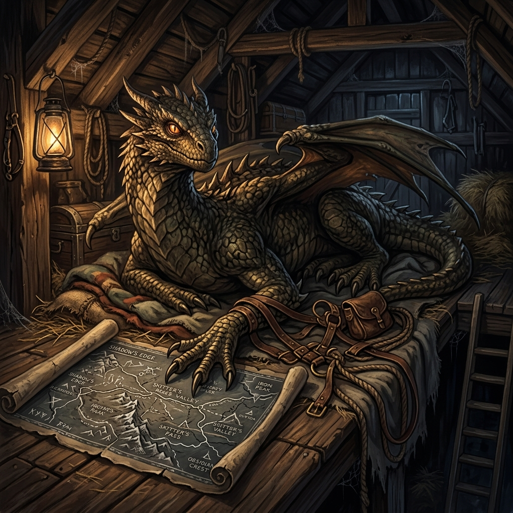

Illustrative Atlas & Codex
Volume I: Cartography, Tactics, and Assets
This codex compiles and embeds the complete visual assets for Blackwater Quay — Book One: The Ledger of Ash, including regional map plates, tactical compound battlemaps, creature designs, unique items, caravan vessels, and character profiles.
Section I Cartography & Districts
These plates map the physical and political geography of the Western Approach and the city of Blackwater Quay itself, providing the spatial anchor for Banki's operations. Click on any plate to view the high-resolution map.

Plate 01
The Western Approach
Regional map showing the trade routes, road networks, and key transit arteries leading into Blackwater Quay.

Plate 02
Brinewood & Shattercliff
Detail of the dangerous eastern borderlands, mapping creature territories and hidden caravan routes.

Plate 03
Blackwater Quay District
City-wide map detailing the stacking of canals, municipal offices, and the physical boundaries between districts.

Plate 04
The Gull & Gasket District
Close-up cartography of the northern canal district, focused around the tavern serving as the first ShadowNet hub.

Plate 05
The Registry and Market Run
Tactical map of the municipal heart, where the Transfer Registry and the open markets do business.

Plate 06
Dockside Underways
Map of the stacked canal lines, submerged docks, and the entrance to the Belowmarket tunnels.
Section II Sablehook Compound Floorplans
Sablehook is Banki's operational headquarters. These tactical floorplans map the compound from the public-facing auction grounds down to the secure underground vaults and research labs.

Plate 07
Grounds & Courtyard
Ground level layout, showing carriage staging, defensive walls, and outer gatehouses.

Plate 08
The Public Auction Hall
Tactical layout of the central bidding house where exotic specimens and salvaged goods are sold.

Plate 09
Administrative Offices
The administrative heart where Tally manages the ledgers and Mara reviews the agreements.

Plate 10
Research & Breeding
Level negative one, where Direction Four conducts creature cross-breeding and training.

Plate 11
Secure Vaults
Deep-layer containment units constructed with lead-lining and abjuration sigils for high-threat assets.

Plate 12
Residences & Guest Wings
Lodging quarters for probationary shadows, handlers, and the hero holding cells.
Section III Bestiary, Items, and Vehicles
This section documents the unique biological assets, personal artifacts, and transport vessels that define Banki's operational capabilities.

Dire Displacer Rhino
Banki's signature heavy draft beast. A hybrid specimen combining the armor plating of a rhino with the displacement tentacles of a displacer beast, used for the heavy Caravan Line.

Displacer Rhino Family
Breeding pair and juveniles, maintained under Direction Four's breeding protocol to establish the foundation lines and supply the heavy logistics divisions.

Cliff-Skitter Ripper
Elite ambush predator, bred for wall-climbing mobility and high-speed interception in city canals. Exceptionally fast, silent, and highly territorial.

Sablehook Heavy Caravan
Reinforced transport wagon drawn by a Dire Displacer Rhino, equipped with concealed ports for shadows, iron-reinforced walls, and containment rigging for high-priority specimens.

Caravan in Transit
The visual reality of Banki's trade operations, moving secured cargo through the foggy, mist-shrouded western approaches into Blackwater Quay.

The Null-Fang
Banki's custom three-headed scepter, enchanted through the Tri-Weave (arcane, psionic, and divine channels) to enforce systematic negation of enemy spells.
Section IV Locations & Lore
Visual profiles of key landmarks and settings in Blackwater Quay, anchoring the atmosphere of the novel.

City Facade
Blackwater Quay Panorama
Panoramic rendering of the foggy, canal-dense port city. Grey slate roofs, timber docks, and the constant shroud of brine and coal smoke.

Safe House Front
The Gull & Gasket
Exterior of the Northern Sluice tavern purchased by Banki. It serves as a respectable front on the surface and the first secure basement vault underneath.

Belowmarket Terminal
The Buyer Rail Complex
A rendering of the Belowmarket's central terminal where captive cargo is catalogued, routed, and prepared for neural extraction.
Section V Main Characters (Profiles & Poses)
This section contains highly detailed profiles and renderings of the novel's main characters. Switch between the pose tabs below each portrait to view the character in their standing, action, or combat stance.

The Sovereign
Banki (Banki III)
Race: Pixie (Fey)
Class: Warlock 10 / Illithid Savant 1
Template: PixIllithid Hybrid
An ancient pixie captured and studied for 23 years by the Thessalan Consortium. He escaped using his self-developed Tri-Weave magic and adopts a permanent human polymorph disguise to systematically build his own organization, the ShadowNet.
Human Disguise (Standing) — A weary sellsword of middling height, grey-green eyes, weathered leather, and a sharp, calculating expression.

The Commander
Sable
Race: Human
Class: Rogue / Shadow Specialist
Role: Tactical Ops Leader
Banki's tactical commander. An operative whose loyalty was weaponized against her in Oakhaven, leading her to believe that contracts must have teeth and that exit strategies are mandatory. She enforces systematic execution with a cold pragmatism.
Standing — Clad in dark leather brigandine with stern grey eyes, demonstrating her trademark economy of movement.

The Scout
Kestrel
Race: Magical Beast
Type: Cliff-Skitter Ripper
Bond: Psionic (Banki)
A Cliff-Skitter Ripper, an evolved magical predator built for vertical climbing and sudden ambushes. She is highly intelligent, calculating, and shares a deep psionic and tactical bond with Banki, serving as the team's deadly vanguard.
Scouting (Standing) — Sleek, chitinous, multi-limbed Cliff-Skitter predator in scout-barding, perched on a wagon rail.

The Paladin
Aldric Thorne
Race: Human
Class: Paladin (Dawnfather)
Feature: One-handed Stump
A battle-hardened champion of the Dawnfather leading the investigation into Banki's network. He is morally burdened, forced to break his own code and accept damnation to match the efficiency of Banki's system.
Standing — Battle-worn armor, silver-sun surcoat, his left arm ending in a clean bandaged stump.

The Bard
Maren Goldstring
Race: Half-Elf
Class: Bard
Skill: Social Recon / Countersong
A half-elf bard whose songs can heal wounds and soothe minds. She is the empathetic anchor of Aldric's party, using her warmth and sharp listening skills to gather intelligence and disrupt psionic attacks.
Standing — Smiling gently, holding a wooden lute, dressed in dark traveling gear.

The Cleric
Seraphine Dawnmantle
Race: Human
Class: Cleric (Dawnfather)
Focus: Restoration & Wards
A human cleric of the Dawnfather with an inflexible moral compass. She specializes in healing, purification, and anti-psionic prayers, combating the ShadowNet's mental manipulations with unwavering faith.
Standing — Clad in silver-white and gold priestly vestments, holding an iron holy symbol with a stern expression.

The Wizard
Lyris Ashvane
Race: Human
Class: Wizard (Abjurer)
Features: Spectacles / Runewriter
A young human wizard specializing in abjuration and divination. Known for her analytical, razor-sharp mind, she designs the group's magical defenses and crafts abjuration countermeasures against psionic control.
Standing — Wearing scholarly robes, spectacles pushed up her nose, holding a heavy warded spellbook.

The Ranger
Caelen Greenarch
Race: Elf
Class: Ranger
Specialty: Master Tracker
An ancient elf ranger and master tracker. He leads the party through dangerous, waterlogged terrain, hunting down targets without relying on magic and striking silently from afar.
Standing — Weather-worn elf in leather forest armor, bow slung, holding a hunting knife.

The Recruit
Tovin Vale
Race: Human
Origin: Belowmarket
Philosophy: Bent-Spoon
A thin, narrow-shouldered youth from the Belowmarket. Rescued and given structured utility under Banki's system, he sorts bent spoons and becomes a key pawn and target in the psionic war with the Elder Node.
Standing — A thin youth in oversized servant clothes, holding a basket of bent metal spoons.
Section VI Legendary Artifacts, Weapons, and Gear
This section documents the unique weapons, armor, magical implements, and major artifacts associated with the main characters and factions in Blackwater Quay.

Banki's Implement
Null-Ward's CoreFang ("Null-Fang")
Banki's sapient, warlock tri-flail implement. It features a matte-black cowlspike head, Kellbreaker ferrule collar, covenant-coil grip, saltheart anchor sunstone, and a hushforge core to quiet its traces.

Banki's Armor
Mithral Chain Shirt & Darkwood Buckler
Banki's defensive armor set. A lightweight silver chainmail shirt next to a polished darkwood buckler strapped with leather, combining stealth, mobility, and reliable defense.

Banki's Implement
Chasuble of Fell Power
A shoulder-draped warlock vestment woven with pulsing violet arcane threads, concentrating warlock power to focus and amplify his Eldritch Blast (+1d6 damage).

Banki's Gear
Shadow-Stitched Traveling Cloak
A heavy cloak made of shifting, light-absorbing fabric that dissolves into smoky shadows at the borders, granting near-perfect concealment in dark alleys and canal rows.

Kestrel's Armor
Kestrel's Commander Harness
Custom-fitted barding for Kestrel's Large, multi-limbed Cliff-Skitter predator form. It features blackened steel plates, leather rigging, harness blade mounts, and a slate route map holder.

Sable's Gear
Narrow Dark Blade & Brigandine
A slender blackened steel dark blade wrapped in shadow magic, resting on dark leather brigandine armor studded with small iron rivets. Perfectly suited for stealth operations.

Aldric's Gear
Radiant Holy Broadsword & Plate
A heavy radiant broadsword engraved with sun-bursts, emitting a warm golden aura, and battle-worn steel plate armor with a silver-sun surcoat. The armor shows battle scars.

Maren's Gear
Handcrafted Lute & Traveling Garb
A beautiful, handcrafted wooden lute with silver pegs resting on clean traveling clothes and a leather map case. Serves as her musical focus and countersong implement.

Seraphine's Gear
Iron Holy Symbol & Prayer Beads
An iron sunburst holy symbol on a chain next to carved wooden anti-psionic prayer beads that glow with soft silver abjuration sigils, warding off mental intrusion.

Lyris's Gear
Warded Spellbook & Spectacles
A thick leather-bound spellbook warded with glowing brass and blue runes, next to wire-rimmed spectacles. Contains her complete abjuration and divination formulary.

Caelen's Gear
Recurve Longbow & Scout Leather
A recurve yew longbow next to green forest leather armor and fletched arrows. Designed for tracking and silent, deadly strikes from the shadows.

Major Artifact
Cinder Crown
A Major Artifact forged in flame, made of smoldering embers, ash, and floating flames. It represents the sovereign will of one who has risen raw, unbroken by ash and flame.

Banki's Device
The Glasswright Prison
A warded glass containment cylinder created by Banki, glowing with pink and purple stasis runes. It locks high-priority targets in a suspended space-time stasis.

Banki's Device
The Lesson (Extraction Chair)
Banki's stone and iron interrogation chair with lead-lined bindings, abjuration sigils, and a glowing crystal neural extraction headset for harvesting memories.

Drowned Choir Device
Harmonic Form Apparatus
The Drowned Choir's tuning bracket. A brass frame holding a large mechanical tuning fork and pulsing teal harmonic crystals that vibrate with psionic resonance.